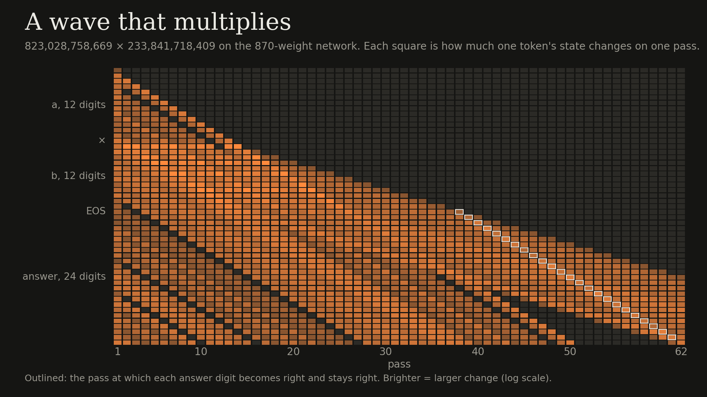
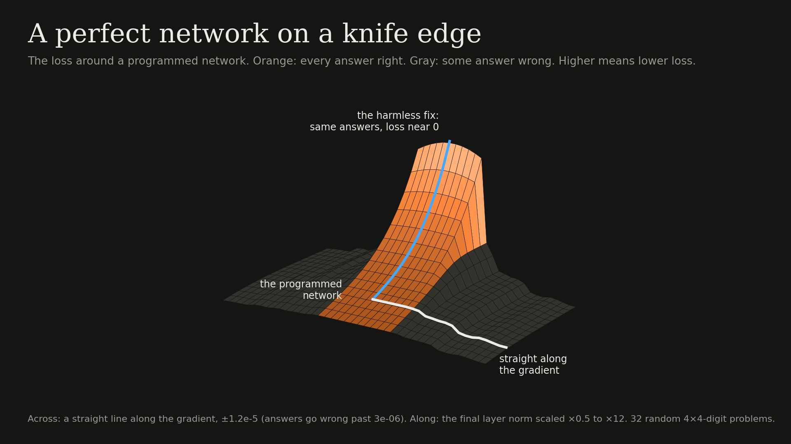
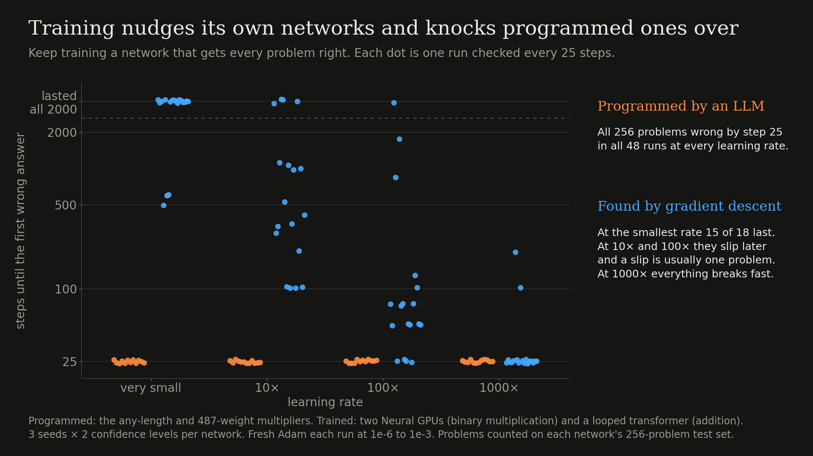
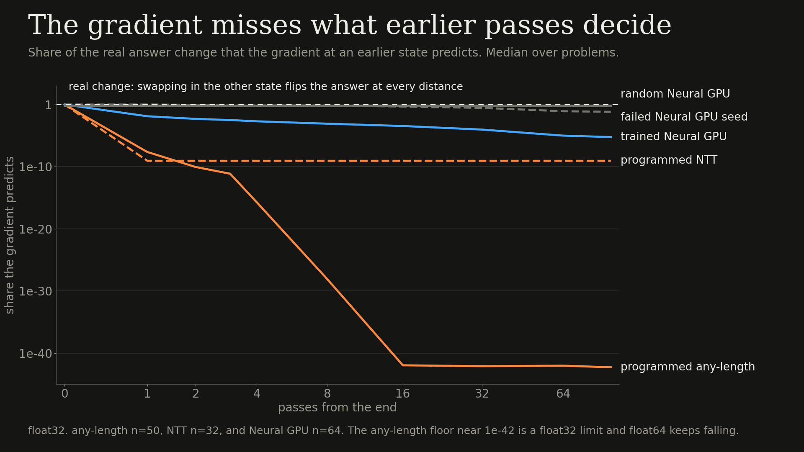
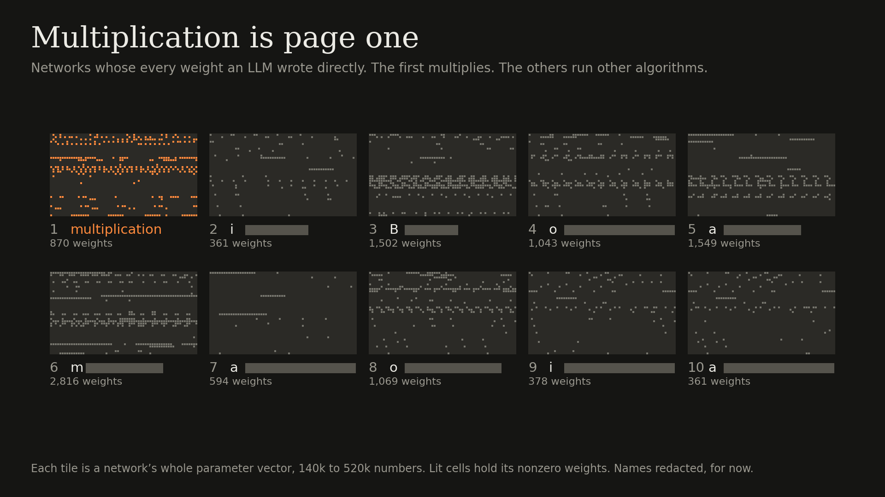
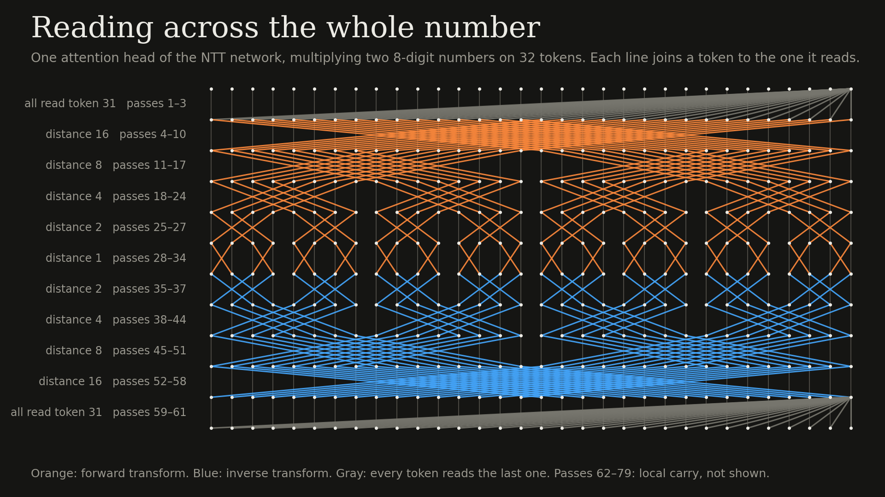

November 8, 2026
Is learning about the journey or the destination?
Gradient descent is how networks learn to solve problems. It follows the slope of the loss function, one small step at a time. The loss is there to punish bad solutions, so if you hand gradient descent a perfect one you’d expect it to stay put.
Oddly enough, it doesn’t.
In my last post LLMs set every weight of small transformers that multiply. This is weight-space programming and I’ll call the results programmed networks. Opus has since programmed one that multiplies numbers of any length with no mistakes in 3 million problems, so I handed it to gradient descent and kept training it with Adam, and within 25 steps it got every problem wrong.

Bengio, Simard, and Frasconi described a trade-off in 1994 that explains part of this. To hold information over many steps a network has to ignore small nudges, but a gradient only measures small nudges, so the better a network holds information the less its gradient can see. This network is built to hold information by snapping its state back to exact values on every pass, which is exactly the kind of thing the gradient can’t see.
Why it matters
Gradient descent leans toward simple and smooth solutions and that’s probably part of why deep learning generalizes. For language, where little is exact, that may be the right taste. Exact computation over many steps is a different story and it’s where trained models struggle. Language models do arithmetic with a bag of heuristics and transformers often fail on inputs longer than the ones they saw. The usual explanation is that the algorithm is hard to find, but programmed networks point to a second one, which is that even when you hand gradient descent the algorithm it doesn’t stay. That matters for any model that carries state across many steps, like recurrent-depth models and Coconut.
This was hard to test before because you need the right answer to compare against, and weight-space programming gives you one.
Training a programmed network
The network gets every answer right but it’s only about 60% confident, so the loss still pushes on it. There’s a harmless fix, which is to scale up the final layer norm, and that takes the loss to near zero without changing a single answer. The gradient almost ignores it (cosine about 1e-10) and points somewhere fragile instead, where a step of 3e-6 breaks the network on 4-digit problems. Making it confident first doesn’t help either, since it still breaks at the same distance.

Training networks it found itself
Is gradient descent this harsh on every network? I kept training three networks it found itself, two Neural GPUs trained on binary multiplication and a looped transformer trained on addition, both as trained and scaled down to the same 60% confidence. Next to them I trained the two programmed networks, the any-length one and the 487-weight two-layer one from the last post, all with the same Adam setup.
| Learning rate | Found by gradient descent (18 runs) | Programmed (12 runs) |
|---|---|---|
| Very small | 15 lasted all 2000 steps | All 256 problems wrong by step 25 |
| 10× bigger | 4 lasted, and the rest slipped, usually by one problem | All 256 wrong by step 25 |
| 100× bigger | 1 lasted, and the rest slipped, usually by one problem | All 256 wrong by step 25 |
| 1000× bigger | None lasted, and most broke by step 25 | All 256 wrong by step 25 |

The difference is what the gradient can see. On the trained networks at the same confidence it points partly along the harmless fix (cosine 0.4 to 0.6), and on the programmed ones it’s about 1e-10 or less. So gradient descent nudges every solution, but it can see the ones it found itself and nudges them gently, and it can’t see the programmed ones so it knocks them over.
What the gradient can’t see
You can watch Bengio’s trade-off directly. Take the same problem with one digit changed and swap its state into the network some passes before the end, and the network gives that problem’s answer every time, so the earlier state decides the answer. Then ask how much of that change the gradient predicts. Eight passes back it’s less than 1e-27 on the programmed network, at most 0.15% on a trained Neural GPU, and roughly all of it on random networks. The gradient only goes blind once a state is carrying the computation.

The loop makes it worse. Almost all of the gradient comes from the last pass, and since every pass shares the same weights, the change it asks for lands on all of them. That’s why long problems break first: a step of 3e-6 breaks 4-digit problems, but 3e-7 is enough for 100-digit ones. When I gave the last 22 passes their own copies of the weights (same function), the network survived a 37× larger step and the first failures moved to 4-digit problems. The loop isn’t the whole story though, because the two-layer network has no loop at all and collapses just the same. What the two programmed networks do share is a gradient that can’t see the harmless fix.
What’s next
Almost every model learns by gradient descent, and this is a tiny example of where it falls short. It can’t find, or even keep, a solution that I know exists and can check exactly.
- One fix is the architecture. The LSTM gave held state a path the gradient could pass through, so it could hold information for a long time and still be trained.
- Another fix is the objective. Give each pass its own signal, like Bai et al.’s running-sum loss from the last post, and the gradient doesn’t have to see through the whole loop. Programmed networks make that easy to test, since I know what every state should be.
- The fix I’m most excited about is weight-space programming itself. A model that writes weights has a second way to learn, one that isn’t limited to what the gradient can see. A model that reads weights can say what a network is actually doing, and you can check it by poking the network instead of trusting its explanation.
Here’s the fun part. Every write and every read comes with an answer you can check, and models got very good at math and code once they could practice on checkable answers. Multiplication is just page one of the algorithms textbook. I’ve been working through the rest, and the real prize is a model that can read and write its own weights.

Thanks to Damien Teney (@DamienTeney), Soumil Bhandari (@SoumilBhandari), Cheng Lou (@_chenglou), and Dimitris Papailiopoulos (@DimitrisPapail) for the questions and pointers.
Code: github.com/DeepakSingh98/mult-min-net
PS
A few other notes that didn’t fit above.
- Last post’s questions.
- Does it work past 4 digits? (@SoumilBhandari) Yes. Opus programmed a network with 870 nonzero weights that multiplies numbers of any length. There’s a hand argument that it works at every length, and it has done 3 million problems up to 500 × 500 digits without a mistake.
- Do you need a transformer? (@_chenglou) Not for that one. It’s a cellular automaton and works like the iterative-array hardware multipliers of the 1960s.
- Is it like what training would find? (@DamienTeney) Partly. The Neural GPU learned the same kind of algorithm in 2015 on binary numbers.
- Could training find these networks? (@DamienTeney) Not in my runs.
- It’s not just the slow wave. Opus proposed a second network built on a number-theoretic transform and GPT-6 Astra programmed it. It reads across the whole number at once in the same butterfly pattern as an FFT, and it has the same blind spot, with the gradient recovering at most 2.5e-8 of the change.
